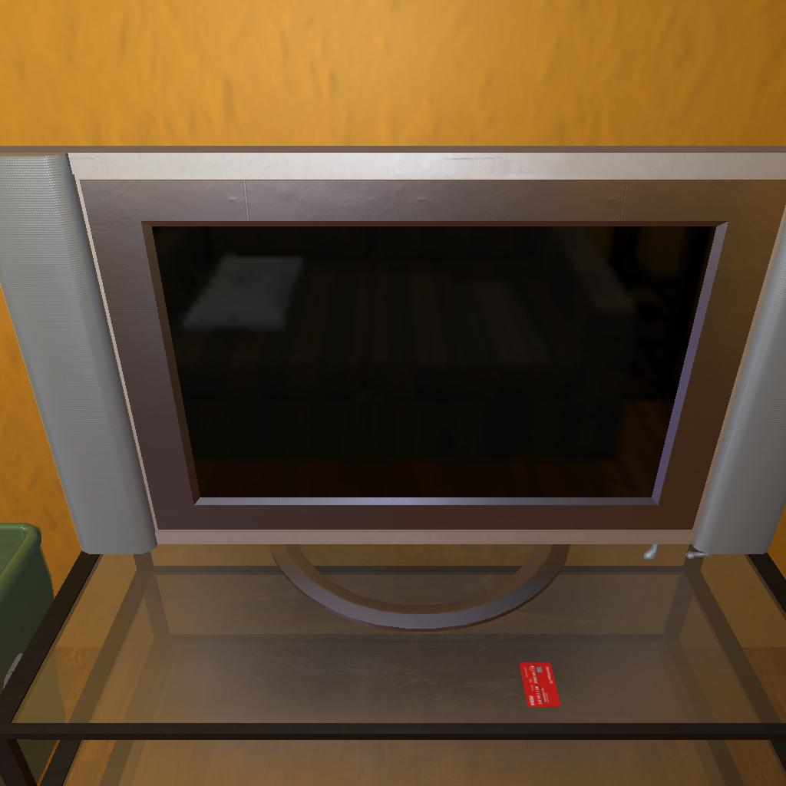
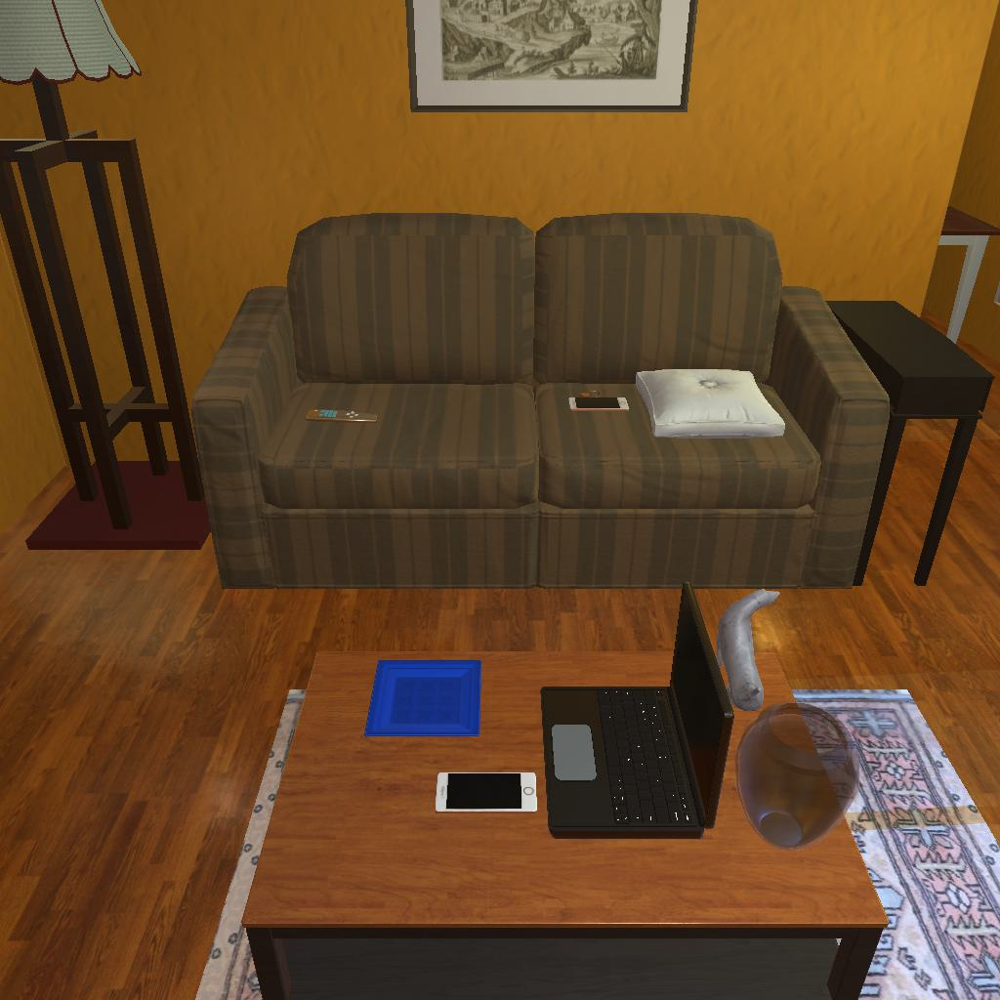

---------------------------------------------------------task: 3---------------------------------------------------------
--------------------------------------------------------------------------------------------------------------------------------------------------------------------
--------------------------------------------------------------------------------------------------------------------------------------------------------------------
Step:--------------------------------------------------------------------------2-------------------------------------------------------------------------------
----------------------------------------
VLM Prompt:
Image1:
Image2:
Image3:
**Instruction**
1. Analyze the provided images to identify all visible household objects and compare the difference between images (e.h. whether the object is opened or not and taken on hand or not), focusing on those relevant to the task description "examine the plate with the floorlamp."
2. Use the analysis of images and the task hint "The agent must find an object of the desired type, locate and turn on a light source with the desired object in-hand." to answer the question: what is the most reasonable action in the choices for the task description "examine the plate with the floorlamp"?
3. Decide and write the answer using the template: The answer is: (i): , where i is the real number. If there is no desired object in images, search every place based on **Initial Observation** to find the object. And if no one is exactly correct, choose a similar answer.
**Initial Observation**
You are in the middle of a room. Looking quickly around you, you can see armchair (1), garbagecan (1), tvstand (1), shelf (1-5), sofa (1), coffeetable (1), sidetable (1-2), drawer (1)
**Answer Choices**
(1): go to armchair 1
(2): go to garbagecan 1
(3): go to tvstand 1
(4): go to shelf 1
(5): go to shelf 2
(6): go to sofa 1
(7): go to sidetable 1
(8): go to sidetable 2
(9): go to drawer 1
(10): go to shelf 3
(11): go to shelf 4
(12): go to shelf 5
(13): put plate 1 in/on coffeetable 1
(14): use floorlamp 1
(15): examine plate 1
(16): examine coffeetable 1
**Answer**
Let's think step by step by following the instructions.
----------------------------------------
----------------------------------------
Original Response:
First, we need to identify all visible household objects and compare the differences between the images.
In Image 1, we can see a TV on a TV stand.
In Image 2, we can see a sofa with some items on it, a coffee table with a laptop, a phone, a tablet, and a floor lamp next to the sofa.
In Image 3, we can see the same sofa and coffee table, but now there is also a blue plate on the coffee table, and the floor lamp seems to be on (it is glowing at the top).
Based on the task description "examine the plate with the floorlamp," we can infer that the desired object is the plate, and the light source to be turned on is the floor lamp. Since the floor lamp is already on in Image 3, and the plate is on the coffee table, we can skip the step of locating and turning on the light source.
Therefore, the most reasonable action to take for the task description "examine the plate with the floorlamp" is to examine the plate while the floor lamp is on.
The answer is: (15): examine plate 1
----------------------------------------
----------------------------------------
>>> Refine Original VLM Response and Get Pure Action: examine plate 1
----------------------------------------
-----------------------------------------------------------------
Running time: 10.652160406112671 seconds
Total Money: 0.93936
-----------------------------------------------------------------
-----------------------------------------------------------------
Text Observation:This is a normal plate 1
-----------------------------------------------------------------
UNSUCCEED